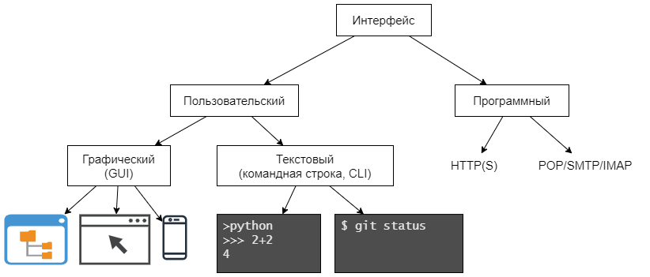

Проектирование программ
Проектирование программ
Проектирование программ
В процессе проектирования программы определяются основные потребительские свойства этой программы(интерфейс и функционал), а также в общем виде структурные элементы и способы реализации (моделирование и декомпозиция).
Интерфейс определяет способ взаимодействия с программой. Например, это может быть веб-страница или консольное приложение. Интерфейс определяет какие данные пользователь вводит в программу, а какие получает в качестве результатов, а также определяет способы управления программой. Данный вид интерфейса называется пользовательским (UI, user's interface) и может быть:

Программа также может взаимодействовать с другой программой. Способ взаимодействия программ часто называется протоколом. Протокол можно считать элементом программного интерфейса.
На рисунке изображены различные программы с графическим пользовательским интерфейсом (это могут быть браузер, файловый менеджер, например, Проводник Windows, текстовый редактор, например Блокнот). Также приведены примеры консольных программ: интерпретатора Python IDLE и системы контроля версий Git.
Из программных протоколов упомянуты:
Таким образом получается, что пользователь взаимодействует с программой, например браузером, используя манипуляции с графическим интерфейсом, а браузер отправляет запросы на сервер и получает ответы используя программный протокол, например HTTPS.
В случае с консольной программой ситуация аналогичная. Например, пользователь системы контроля
версий Git выполняет в консоли команду git push, после чего программа Git отправляет локальные
изменения в удаленный репозиторий (например, GitHub), используя специализированный программный
протокол.
Рассмотренные выше понятие и разновидности интерфейсов трактуют интерфейс достаточно широко. С точки зрения проектирования мы чаще будем рассматривать интерфейс обособленного фрагмента программы, т.е. функции. Интерфейсом функции является набор принимаемых аргументов и тип возвращаемого значения. Интерфейс функции определяет способ взаимодействия этой функции с другим программным кодом.
Интерфейс не определяет способ реализации функционала программы (или фрагмента программы).
Модель — это такое представление объекта реального мира, которое содержит минимальное количество его характеристик, необходимое для решения поставленной задачи. Например: для библиотеки читатель представляется как сущность имеющая атрибуты ФИО, адрес, паспортные данные. Такие характеристики как семейное положение и привычки не требуются.
Декомпозиция — это способ управления сложностью задачи, при котором задача разбивается на подзадачи, которые в свою очередь могут также разбиваться образуя иерархию. Декомпозицию стоит выполнять для задач, которые сложно понять и решить без разбиения. Подзадачи следует стараться выделять максимально логически завершенными с минимальной зависимостью от остальных задач. В этом случае возможно найти уже существующие решения, либо созданное решение может быть в последствии использовано в других задачах.
Дана функция hanoi, которая возвращает последовательность
перекладывания Ханойской башни.
Задача: протестировать эту функцию.
Функцию тестирования назовем test_hanoi. Она будет принимать те же аргументы (n, s1, s3, s2),
что и функция hanoiи проверять работу функции hanoi с заданными аргументами. При положительном
результате (функция hanoi работает корректно), функция test_hanoi ничего не выводит. В противном
случае выводит сообщение об ошибке, включающее перечисление аргументов и описание некорректного
поведения.
Проверку будем осуществлять посредством эмуляции перекладывания дисков реальных Ханойских башен. Стержни будут представлены массивами, а диски элементами массивов. Диск у основания пирамиды будет представлен элементом массива по индексу 0.
Перекладывание будет смоделировано извлечением (удалением) последнего элемента одного массива и добавлением этого элемента в конец другого массива.
Упомянутые выше массивы удобно расположить в массиве из трех элементов ([[], [], []]) и обращаться
к ним по индексу. Для этих целей введём требование, что аргументы s1, s2, s3 могут принимать
значения 0, 1 или 2.
Замечание
Последнее соображение на самом деле к моделированию не относится, а относится к реализации. Здесь приведено для удобства последующего описания декомпозиции.
Весь процесс реализации удобно разделить на следующие подзадачи:
Собираем проверочный стенд.
Заполняем массив с индексом s1 числами от n до 1 и в убывающем порядке.
Проверяем процесс перекладывания.
Предполагаемый алгоритм. Вызываем функцию hanoi, получаем от нее последовательность
перекладываний, выполняем
перекладывания и на каждом шаге проверяем, что добавляемый элемент меньше предыдущего, либо
является единственным элементом массива, если это не так, то выводим сообщение об ошибке и
завершаем проверку.
Проверяем конечное состояние.
По окончании перекладываний проверим, что в массиве с индексом s3
находится n элементов, а два других массива пусты.
Реализация теста представлена здесь.
Википедия: Don’t repeat yourself:
Принцип DRY формулируется как: «Каждая часть знания должна иметь единственное, непротиворечивое и авторитетное представление в рамках системы».
...
Когда принцип DRY применяется успешно, изменение единственного элемента системы не требует внесения изменений в другие, логически не связанные элементы.
Примером следования этому принципу является использование функций. Если имеется фрагмент программного кода, решающий определенную задачу, то можно добавлять его в те места программы, где он необходим. Однако модификация такого кода потребуется во всех местах, где он был применен. Это очень сложно или даже невозможно. Выделив данный фрагмент кода в функцию, мы избегаем повторения. Код становится более управляемым и к тому же более читабельным.
Аббревиатура DRY расшифровывается как Don't Repeat Yourself — не повторяйся. К тому же слово "dry" означает сухой. Программисты иногда говорят: "подсушить код", т.е. вынести повторяющийся код в отдельные функции.
Википедия: Объектно-ориентированное программирование, (англ.) Object Oriented Programming (ООР):
Объе́ктно-ориенти́рованное программи́рование (сокр. ООП) — методология программирования, основанная на представлении программы в виде совокупности взаимодействующих объектов, каждый из которых является экземпляром определённого класса, а классы образуют иерархию наследования.
Технические детали создания объектов и классов представлены в разделе "Объекты и классы". Здесь будут рассмотрены более теоретические вопросы.
Типы данных в различных языках используются для определения способа интерпретации значений. Например: имея ссылку на целое число, транслятор языка руководствуясь описанием типов, принимает решение сколько ячеек памяти следует прочитать и каким образом выполнять операции с этим значением.
Классы можно представить как типы данные созданные программистом. Так же как с другими типами для использования класса требуется создать соответствующие значения, экземпляры класса.
Механизм наследования классов в какой-то степени аналогичен наследованию признаков живых существ от родителей к потомкам в природе. В случае с классами дочерний класс обретает (наследует) все или часть полей и методов родительского класса.
Особенностью языка Python является отсутствие требования соответствия объекта определенному типу (классу). В более строгих языках программирования принадлежность объектов определенному классу определяет возможность его использования в конкретной ситуации, несмотря на это в языке Python является очень важной идея интерфейса. Интерфейс определяет поведение реализующих его объектов, однако сам это поведение не реализует. Рассмотрим интерфейс итерируемого объекта, который может включать два метода:
Данный интерфейс может быть реализован различными объектами например, коллекциями и генераторами.
Цикл for принимает итерируемый объект, который реализует перечисленные выше методы, следовательно
цикл for может работать одинаковым образом с различными объектами, если они реализуют
требуемый интерфейс.
Note
На самом деле сообщение об отсутствии следующего элемента происходит с использованием механизма исключений. Но в контексте данного повествования эта особенность не существенна.
Один объект может реализовывать более одного интерфейса, например рассмотрим списки и словари. Для
доступа к элементам этих коллекций используются квадратные скобки, то же самое можно делать и со
строками. Поддержка такого способа доступа также является реализацией интерфейса (subscriptable).
Объекты не реализующие этот интерфейс (например, число) такой способ доступа не поддерживают.
>>> n=5
>>> n[0]
TypeError: 'int' object is not subscriptable